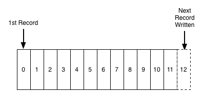

Agenda
- Theorie
- Historie
- Allgemeines
- Terminologie
- Producer
- Consumer
- Zookeeper
- Code
- Schema Evolution
- Schema Registry
Historie
Allgemeines
- Kafka ist eine Streaming Platform
- 1..n Producer schicken Nachrichten an 1..n Consumer (Publish-Subscribe)
- Nachrichten werden von Kafka persistiert
- Zentrale Komponente in einer Event-Driven-Achitecture
- Entkoppelt Services
Kafka is a distributed, horizontally-scalable, fault-tolerant, commit log
distributed
Kafka läuft in einem Cluster, der aus mehreren Nodes besteht. Er speichert, empfängt und sendet Nachrichten zu anderen Nodes im Cluster. Nodes im Cluster nennt man Brokers.horizontally-scalable
Es können (zur Laufzeit) neue Broker auf neuen Machinen hinzugefügt werden, wenn die Last zu groß wird.fault-tolerant
Alle Nachrichten werden auf mehreren Brokern gespeichert (= redundant). Somit können einzelne Broker ausfallen ohne das System funktional zu beeinflussen (kein Single Point of Failure).commit log
Kafka speichert und liest die Nachrichten sequentiell und unveränderlich. Kafka speichert alle Nachricht auf der Disk.
Terminologie
Topic
a category or feed name to which records are publishedz.B. change.partner
Partition
Each partition is an ordered, immutable sequence of records that is continually appended to — a structured commit log.z.B. change.partner => 10 partitions
Producer
Producers publish data to the topics of their choice. The producer is responsible for choosing which record to assign to which partition within the topic.z.B. event-hub
Consumer
Consumers label themselves with a consumer group name, and each record published to a topic is delivered to one consumer instance within each subscribing consumer group. Consumer instances can be in separate processes or on separate machines.z.B. partner-service
Log
Producer

Consumer

Zookeeper
- Ist eine Datenbank zum Speichern von Konfiguration und Metadaten für den Kafka Clust
- Ist ein eigener Cluster neben dem Kafka Cluster
- Aufgaben:
- Leader Election
- Mitgliedschaft im Cluster: Welche Broker sind aktiv und Teil des Clusters?
- Topic Metadaten: Welche Topics gibt es? Wieviele Partitionen haben sie? Wer ist der Leader oder der Replication Factor einer Partition?